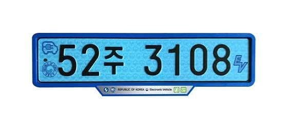
내연기관차 -> 전기차 전환
요새 주변에 운전하면 전기차가 꽤 보일거임
저 파란 번호판 단 차들
그래도 아직 멀었다 하기엔 전기차 시장의 성장세가 미친 수준임
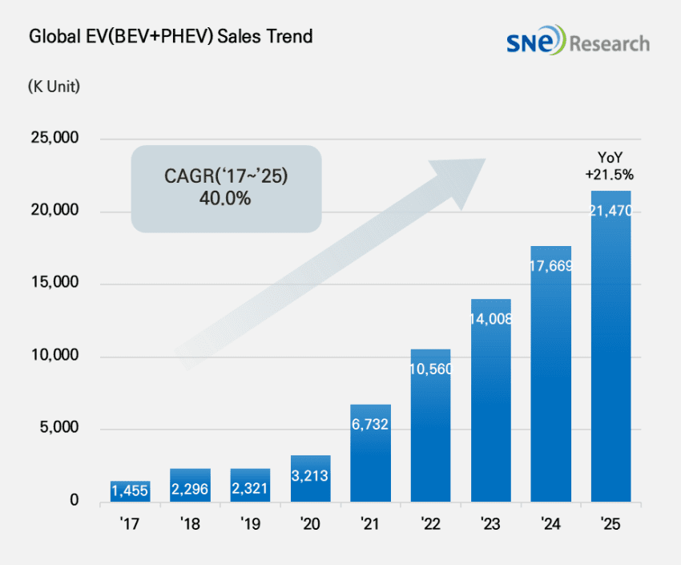
전기차 판매량 추이 그래프인데
코로나 시즌인 19년을 기점으로 현재는 그보다 10배 가까이 판매되고 있음
26년엔 당연히 더 팔렸을 거고
이는 상당히 빠른 속도인데 왜이렇게 전기차 시장이 빠르게 성장하냐면
근본적인 원인은 역시나 또 유럽에게 있음
물론 영국 한나라 때문에 그런건 당연히 아니고..
EU국가들과 영국 주도하에 전 세계적인 영향을 주는 완전 탈탄소 정책(CFE)과 완전 100% 신재생에너지(RE100) 때문임
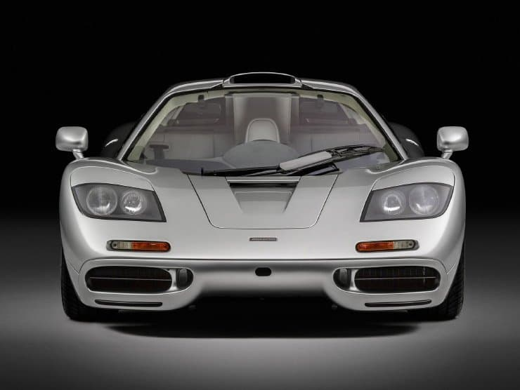
물론 유럽 놈들은 당연히 말만 그렇게 하는게 아니고 실제로 니네 신차 CO2 평균 배출량 안줄이면 니네들 자동차 수입 안하겠다고 거의 반 협박을 해대서
기존 자동차 회사들은 저 규제를 맞추기 위해 울면서 전기차 또는 하이브리드 차 생산을 늘려야만 했음
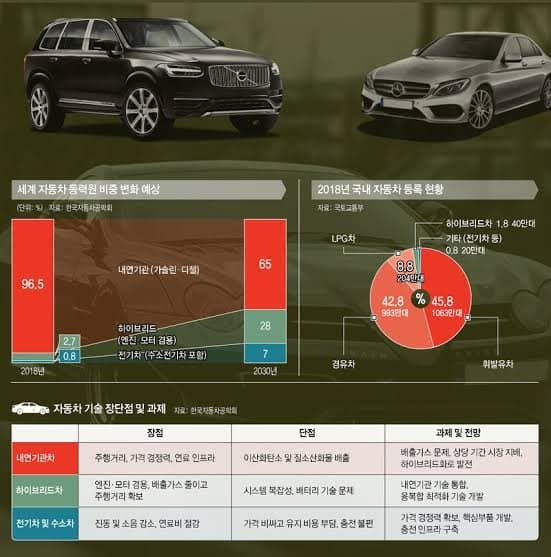
그결과 2019년에 전문가들이 예측한 섹계 글로벌 자동차 동력원 비중을 훨씬 상회하게 됨
현재 글로벌 자동차 동력은
내연기관(디젤, 가솔린) 약 55%
하이브리드 및 플러그인 약 25%
전기차 약 20%
그외 5%정도인데
특히 2030년에도 순수 전기차 비중은 7%대일 것이다 라는 전문가들 예상을 깨고 2026년에 약 20%를 찍어버림
이는 정말 빠른 속도다 애초에 저기 자료 제공한 한국자동차 공학회는 자동차 산업과 학계를 대표하는 최고수준의 집단인데도 크게 틀렸다는 점에서 더더욱..
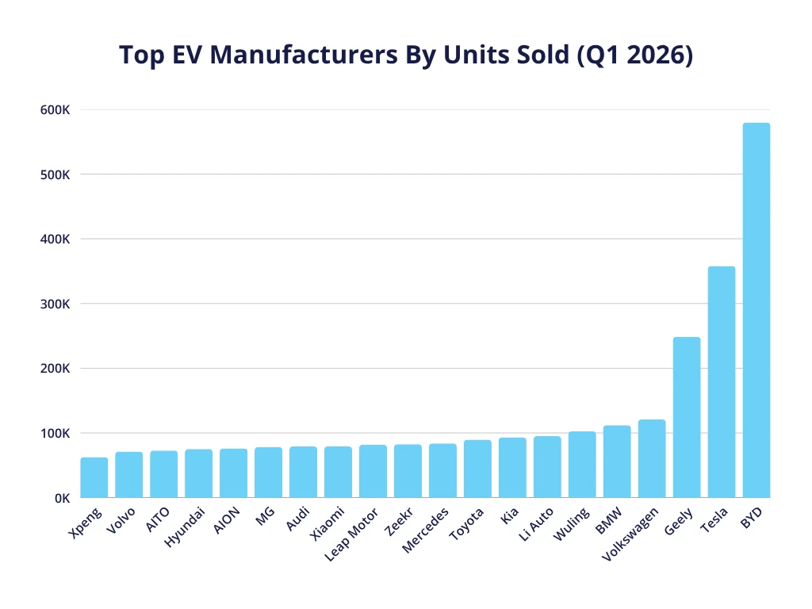
이건 세계 전기차 시장 판매량 비율인데
BYD라는 중국 전기차 회사가 전세계 1위를 찍엇다
물론 저 그래프에 회사 이름이 있다는 것만으로 세계적인 자동차 회사로 보아도 되기에 대단한 거지만
1위를 찍은 건 좀 다른문제니깐
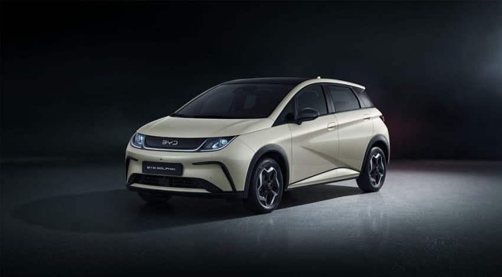
그럼 BYD 전기자동차 사업은 왜 성공했을까?
일단은 극한의 가성비를 자랑한다
레이나 캐스퍼보다 크기가 조금 더 큰 차를 쟤네들 둘보다 출고가를 적게 받고 판다
그냥 가격 경쟁이 안됨 그나마 나라에서 전기차 보조금을 BYD 차에겐 덜 주거나 탈락시키고, 국산 차들은 보조금을 지급하는 방식으로 가격 경쟁을 유지하고 있는 수준이다
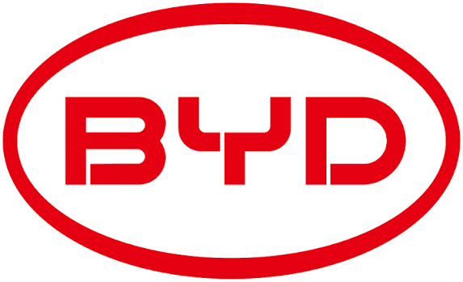
이 BYD라는 회사는 본래 휴대폰 배터리 팔던 회사였음
근데 스미트폰의 보급과 통신의 발달로 엄청난 수혜를 입었고, 특유의 압도적인 생산량으로 한때 삼성 스마트폰에도 까보면 삼성 배터리가 아니라 이 BYD 회사 배터리가 들어가 있을 정도였다..
워렌 버핏 조차 이 BYD회사의 주식을 10년간 보유해 거의 2,000~3,000%라는 수익을 얻었으니 어찌보면 이 회사의 성공은 정해진 수순이였던 셈
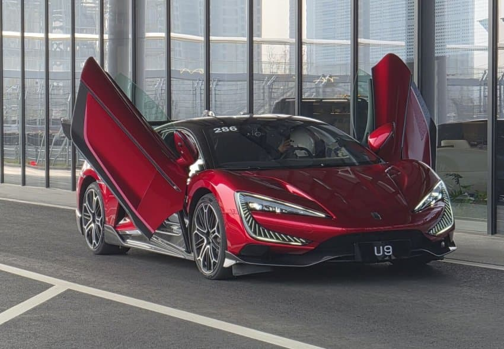
휴대폰 배터리 팔면서 얻은 자본과 기술력(남의 기술 베꼈든, 최고수준 연구원으로 직접 연구을 했든)을 바탕으로 BYD는 2000년대부터 전기차 시장 및 반도체 시장에도 뛰어들었으며 결국 압도적인 가성비 정책이 먹혀들어갔다
이것이 2020년대 한국의 이차전지주식이 고꾸라진 뒤 영 힘을 못쓰게 된 계기가 됨
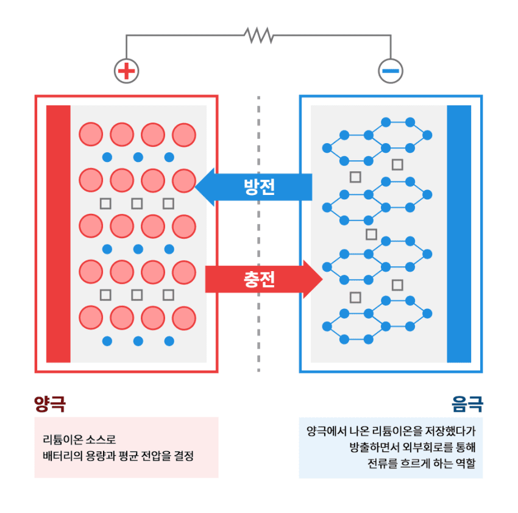
먼저 국내 2차전지시장은 크게
배터리를 완제품으로 조립하는 삼성SDI, LG에너지엔솔루션, SK 온 등 국내 대기업 계열사를 필두로 한 회사들과
가장 중요한 이차전지의 소재가 되는 양극재 등을 만드는 포스코퓨처앰, L&F, 에코프로비엠 등의 회사로 구분되는데
이 소재가 되는 부분에서 좀 밀렸다고 보면 편함
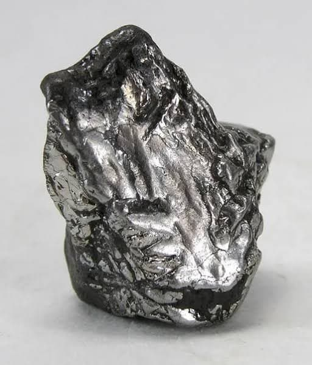
먼저 국내 양극제 만드는 회사들은
철을 별로 중요하게 보지 않고, 고출력 중심의
니켈, 코발트, 망간 등 삼원계응 이용한 전기차 이차전지를 주로 만들었는데(NCM)
중국의 BYD 등의 회사는 다소 출력과 주행거리는 떨어지고 무겁더라도 값싸고 화재 안정성이 뛰어난 금속인 철에 주목했음 이를 LFP,(리튬인산철 배터리) 라고 함
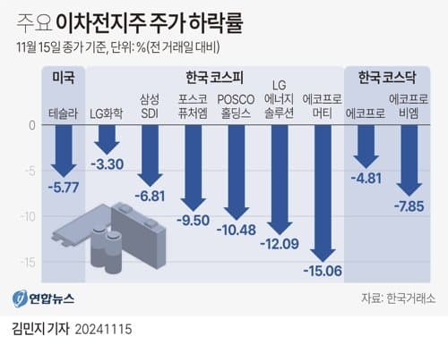
결론적으로 LFP가 2026년 기점으로 보급률 수치를 보나, 점유율 수치를 보나 NCM보다 더 많이 팔리고 성공하게 되었으며,
국내 이차전지주(소재쪽)식이 나락간 뒤 영 힘을 못쓰는 상태가 계속 되고 있다고 보면 됨
그래도 현재 마냥 나쁘게만 보면서 국내 배터리 시장은 끝났다 라고 보기에도 애매한게
이미 위의 소재쪽 이차전지 회사들은 LFP 배터리 연구 및 상용화 단계에 착수에 돌입핶으며,
미국 ESS 데이터센터 배터리 보급 계약도 체결하는등 성과를 보이고 있으며
한 회사는 꿈의 전해질인 전고체 배터리 라는걸 상용화 목표로 잡는 등 재기에 힘쓰고 있는 모습임
나도 주식을 안해서 잘 몰랐는데 많은 주식쟁이들이 국내 이차전지주가 나락가서 전기차 시장은 끝났거나 희망이 없다 라고까지 생각하는 사람도 꽤 보이던데
결론만 말하면 전기차 시장은 전혀 희망이 없지 않으며 오히려 해를 거듭할수록 엄청난 성장을 보이고 있음
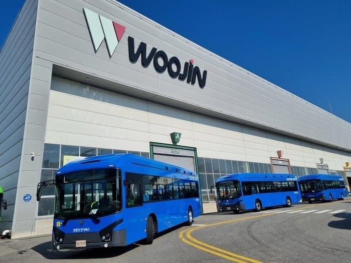
2027년에 한 전기버스 제작 회사는
무려 자율주행 상용 전기버스를 목표로 하고 있는등
전기차 시장이 커지면 커지지 이제 떨어지거나 둔화 위축될 일은 당분간 없을 예정
결론적으로 유럽의 저 RE100인지 탈탄소정책인지 뭔지 때문에 모든 내연기관차는 이제 사라질 거고 전기, 수소차 등 친환경 차로 대체되는것은 정해진 수순이기 때문
댓글
수집 당시 댓글 372개
ㅇㅇ · 11.27 23:40:42
ㅇ ㅇ · 11.27 23:42:55
ㅇㅇ · 11.27 23:43:06
· ㅇㅇ · 11.27 23:43:22
· ㅇㅇㅇ · 11.27 23:45:41
00 · 11.27 23:43:51
· ㅇㅇ · 11.28 20:16:34
ㅇㅇ · 11.27 23:44:52
겐쉰프 · 11.27 23:47:26
· ㅇㅇ · 11.27 23:57:12
· ㅇㅇ · 11.28 16:15:56
관타나모 · 11.27 23:49:03
ㅇㅇ · 11.27 23:49:09
ㅇㅇ · 11.27 23:52:34
· ㅇㅇ · 11.27 23:57:01
· ㅇㅇ · 11.28 00:03:20
· 제몸을막만지셨잖아요 · 11.28 01:25:44
· 제몸을막만지셨잖아요 · 11.28 01:27:23
· ㅇㅇ · 11.28 01:28:00
· 제몸을막만지셨잖아요 · 11.28 02:16:02
· ㅇㅇ · 11.28 02:33:14
· ㅇㅇ · 11.28 17:56:22
감솩 · 11.28 00:02:17
· ㅇㅇ · 11.28 00:04:01
ㅇㅇ · 11.28 00:03:02
ㅇㅇ · 11.28 00:12:18
원또 · 11.28 00:13:48
ㅇㅇ · 11.28 00:19:10
히이잉 · 11.28 00:19:18
필기구 · 11.28 00:25:43
ㅇㅇ · 11.28 00:30:20
ㅇㅇ · 11.28 00:41:37
ㅇㅇ · 11.28 00:43:20
· ㅇㅇ · 11.28 00:49:56
· ㅇㅇ · 11.28 00:52:18
· ㅇㅇ · 11.28 06:52:12
· ㅇㅇ · 11.28 06:53:26
ㅇㅇ · 11.28 00:52:32
ㅇㅇ · 11.28 00:52:36
· ㅇㅇ · 11.28 01:16:50
· ㅇㅇ · 11.28 01:19:01
ㅇㅇ · 11.28 00:56:24
ㅇㅇ · 11.28 01:19:15
ㅇㅇ · 11.28 01:21:21
댓글 · 11.28 01:23:42
· ㅇㅇ · 11.28 01:26:02
35세에모쏠아다탈출 · 11.28 01:44:59
· ㅇㅇ · 11.28 02:50:12
ㅇㅇ · 11.28 01:45:50
· ㅇㅇ · 11.28 17:05:45
ㅇㅇ · 11.28 02:39:43
· ㅇㅇ · 11.28 04:31:59
ㅇㅇ · 11.28 02:45:15
ㅇㅇ · 11.28 02:51:56
ㅇㅇ · 11.28 03:26:02
ㅇㅇ · 11.28 04:01:49
· ㅇㅇ · 11.28 04:03:24
ㅇㅇ · 11.28 04:17:39
ㅇㅇ · 11.28 04:32:01
ㅇㅇ · 11.28 04:32:04
ㅇㅇ · 11.28 05:03:02
· ㅇㅇ · 11.28 05:39:20
· ㅇㅇ · 11.28 05:40:26
ㅇㅇ · 11.28 05:52:25
ㅇㅇ · 11.28 06:02:46
· ㅇㅇ · 11.28 06:09:40
· ㅇㅇ · 11.28 06:25:22
ㅇㅇ · 11.28 06:34:23
ㅁㅁ · 11.28 07:12:28
ㅇㅇ · 11.28 07:27:44
ㅇㅇ · 11.28 07:44:10
ㅇㅇ · 11.28 07:56:08
· ㅇㅇ · 11.28 07:56:29
ㅇㅇ · 11.28 07:57:38
· ㅇㅇ · 11.28 08:04:47
ㅇㅇ · 11.28 08:01:35
ㅇㅇ · 11.28 08:14:07
아요라 · 11.28 08:16:26
ㅇㅇㅇㅇ · 11.28 08:33:00
ㅇㅇ · 11.28 08:53:31
ㅇㅇ · 11.28 09:11:27
쿠두두룩 · 11.28 09:23:45
멍청해씨 · 11.28 09:46:39
ㅇㅇ · 11.28 10:20:58
주소킹 · 11.28 10:36:56
· 주소킹 · 11.28 10:36:59
dd · 11.28 11:04:40
ㅇㅇ · 11.28 11:27:50
ㅇㅇ · 11.28 11:34:16
ㅇㅇ · 11.28 12:22:55
ㅇㅇ · 11.28 12:45:23
· ㅇㅇ · 11.28 12:46:18
o o · 11.28 14:07:15
ㅇㅇ · 11.28 16:20:12
ㅇㅇ · 11.28 16:20:16
ㅇㅇ · 11.28 16:20:19
· ㅇㅇ · 11.28 16:20:44
ㅇㅇ · 11.28 16:41:08
은하수 · 11.28 17:33:25
ㅇㅇ · 11.28 18:08:14
ㅇㅇ · 11.27 22:26:22
ㅇㅇ · 11.27 22:27:22
ㅇㅇ · 11.27 22:30:48
ㅇㅇ · 11.27 22:30:58
· ㅇㅇ · 11.27 22:31:56
ㅇㅇ · 11.27 22:31:23
· ㅇㅇ · 11.27 22:32:10
· ㅇㅇ · 11.27 22:34:17
oo · 11.27 22:32:10
ㅇㅇ · 11.27 22:32:44
ㅇㅇ · 11.27 22:33:08
· ㅇㅇ · 11.28 00:01:32
· ㅇㅇ · 11.28 00:02:41
· ㅇㅇ · 11.28 00:10:14
ㅇㅇ · 11.27 22:34:35
ㅇㅇ · 11.27 22:35:21
· ㅇㅇ · 11.27 23:10:13
ㅇㅇ · 11.27 22:36:20
ㅇㅇ · 11.27 22:36:50
ㅇㅇ · 11.27 22:37:33
ㅇㅇ · 11.27 22:38:53
· ㅇㅇ · 11.27 22:40:35
· ㅇㅇ · 11.27 22:46:47
· ㅇㅇ · 11.27 22:56:08
· ㅇㅇ · 11.27 23:03:37
ㅇㅇ · 11.27 22:39:35
· ㅇㅇ · 11.28 00:24:13
ㅇㅇ · 11.27 22:39:58
ㅇㅇ · 11.27 22:40:24
ㅇㅇ · 11.27 22:40:27
히이잉 · 11.27 22:43:25
ㅇㅇ · 11.27 22:43:26
ㅇㅇ · 11.27 22:44:58
ㅇㅇ · 11.27 22:45:20
ㅇㅇ · 11.27 22:45:30
ㅇㅇ · 11.27 22:47:10
ㅇㅇ · 11.27 22:47:36
· ㅇㅇ · 11.27 22:52:13
ㅇㅇ · 11.27 22:49:34
ㅇㅇ · 11.27 22:51:36
ㅇㅇ · 11.27 22:51:40
ㅇㅇ · 11.27 22:53:08
· ㅇㅇ · 11.27 22:54:07
· ㅇㅇ · 11.27 22:58:21
· ㅇㅇ · 11.27 23:04:58
미쿠닷컴 · 11.27 22:55:31
· ㅇㅇ · 11.27 22:57:19
· ㅇㅇ · 11.27 23:12:00
· 미쿠닷컴 · 11.27 23:13:53
· 미쿠닷컴 · 11.27 23:14:12
· 미쿠닷컴 · 11.27 23:15:28
· 미쿠닷컴 · 11.27 23:16:46
· ㅇㅇ · 11.27 23:18:19
· 미쿠닷컴 · 11.27 23:18:38
· ㅇㅇ · 11.27 23:19:20
· 미쿠닷컴 · 11.27 23:20:18
· ㅇㅇ · 11.27 23:21:15
· ㅇㅇ · 11.27 23:26:58
· ㅇㅇ · 11.27 23:27:00
· ㅇㅇ · 11.27 23:29:50
· 킹갓롤황 · 11.27 23:33:42
· ㅇㅇ · 11.27 23:51:58
· 킹갓롤황 · 11.27 23:53:31
· ㅇㅇ · 11.27 23:56:01
· ㅇㅇ · 11.27 23:59:54
· 킹갓롤황 · 11.28 00:16:43
· ㅇㅇ · 11.28 08:15:28
ㅇㅇ · 11.27 22:57:12
ㅇㅇ · 11.27 22:59:29
ㅇㅇ · 11.27 23:05:03
ㅇㅇ · 11.27 23:08:46
ㅇㅇ · 11.27 23:10:40
2456778 · 11.27 23:11:28
ㅇㅇ · 11.27 23:13:18
· ㅇㅇ · 11.27 23:14:43
· 미쿠닷컴 · 11.27 23:18:12
ㅇㅇ · 11.27 23:16:16
· ㅇㅇ · 11.27 23:20:20
· ㅇㅇ · 11.27 23:21:51
· ㅇㅇ · 11.27 23:23:16
· ㅇㅇ · 11.27 23:24:44
· ㅇㅇ · 11.27 23:25:13
· ㅇㅇ · 11.27 23:25:32
· ㅇㅇ · 11.27 23:28:00
· ㅇㅇ · 11.27 23:42:34
· 불쌍 · 11.28 08:41:14
ㅇㅇ · 11.27 23:19:22
ㅇㅇ · 11.27 23:21:44
ㅇㅇ · 11.27 23:22:12
ㅇㅇ · 11.27 23:23:42
· ㅇㅇ · 11.27 23:32:48
맛간람쥐 · 11.27 23:25:50
· ㅇㅇ · 11.28 08:21:02
ㅇㅇ · 11.27 23:27:18
포청천 · 11.27 23:30:26
ㅇㅇ · 11.27 23:31:19
· ㅇㅇ · 11.28 00:06:28
· 불쌍 · 11.28 08:45:12
ㅇㅇ · 11.27 23:37:13
ㅇㅇ · 11.27 23:37:29
킹갓롤황 · 11.27 19:41:46
· ㅇㅇ · 11.27 21:18:53
· 킹갓롤황 · 11.27 21:29:43
· ㅇㅇ · 11.27 21:50:24
· 킹갓롤황 · 11.27 22:00:02
· ㅇㅇ · 11.27 22:03:00
· ㅇㅇ · 11.27 22:25:13
· ㅇㅇ · 11.27 22:25:59
· ㅇㅇ · 11.27 22:26:23
· ㅇㅇ · 11.27 22:28:08
· ㅇㅇ · 11.27 22:30:20
· ㅇㅇ · 11.27 22:34:28
· ㅇㅇ · 11.27 22:35:33
· ㅇㅇ · 11.27 22:36:57
· ㅇㅇ · 11.27 22:37:33
· ㅇㅇ · 11.27 22:38:03
· ㅇㅇ · 11.27 22:38:30
· ㅇㅇ · 11.27 22:39:38
· ㅇㅇ · 11.27 22:40:07
· ㅇㅇ · 11.27 22:40:15
· ㅇㅇ · 11.27 22:40:53
· ㅇㅇ · 11.27 22:41:04
· ㅇㅇ · 11.27 22:41:53
· ㅇㅇ · 11.27 22:42:27
· ㅇㅇ · 11.27 22:44:01
· ㅇㅇ · 11.27 22:46:44
· ㅇㅇ · 11.27 22:47:39
· ㅇㅇ · 11.27 22:49:49
· 킹갓롤황 · 11.27 23:31:26
· ㅇㅇ · 11.27 23:44:06
· ㅇㅇ · 11.27 23:46:15
· ㅇㅇ · 11.28 09:07:11
ㅇㅇ · 11.27 20:01:06
ㅇㅇ · 11.27 20:26:26
ㅇㅇ · 11.27 22:11:30
ㅇㅇ · 11.27 22:11:41
ㅇㅇ · 11.27 22:11:44
익명 · 11.27 22:12:35
ㅇㅇ · 11.27 22:13:18
ㅇㅇ · 11.27 22:14:18
ㅇㅇ · 11.27 22:14:18
· ㅇㅇ · 11.27 22:21:08
· ㅇㅇ · 11.27 22:56:49
· ㅇㅇ · 11.27 22:59:31
· ㅇㅇ · 11.27 23:01:32
ㅇㅇ · 11.27 22:15:09
GIGA · 11.27 22:15:28
ㅇㅇ · 11.27 22:16:23
· ㅇㅇ · 11.27 22:17:28
· ㅇㅇ · 11.27 22:18:19
소봄쇼 · 11.27 22:16:27
ㅇㅇ · 11.27 22:17:02
ㅇㅇ · 11.27 22:17:15
ㅇㅇ · 11.27 22:17:50
ㅇㅇ · 11.27 22:17:50
· ㅇㅇ · 11.27 22:20:59
· ㅇㅇ · 11.27 22:21:37
· ㅇㅇ · 11.27 22:22:33
· ㅇㅇ · 11.27 22:49:32
· ㅇㅇ · 11.27 23:08:29
· ㅇㅇ · 11.28 02:37:44
ㅇㅇ · 11.27 22:17:59
ㅇㅇ · 11.27 22:18:00
· ㅇㅇ · 11.27 22:21:37
· ㅇㅇ · 11.27 22:26:50
· ㅇㅇ · 11.27 22:41:19
ㅇㅇ · 11.27 22:18:08
ㅇㅇ · 11.27 22:18:10
· SMN · 11.27 22:20:12
헌트 · 11.27 22:18:38
ㅇㅇ · 11.27 22:19:11
ㅇㅇ · 11.27 22:19:37
· 대한민국인디언 · 11.27 23:20:34
ㅇㅇ · 11.27 22:19:43
ㅇㅇ · 11.27 22:19:47
삭제됨 · 11.27 22:20:05
· ㅇㅇ · 11.27 22:21:12
· ㅇㅇ · 11.27 22:38:08
· ㅇㅇ · 11.27 22:39:39
ㅇㅇ · 11.27 22:21:03
ㅇㅇ · 11.27 22:21:10
· ㅇㅇ · 11.27 23:33:44
28. · 11.27 22:21:30
ㅇㅇ · 11.27 22:22:11
· ㅇㅇ · 11.27 22:23:28
· ㅇㅇ · 11.27 23:03:14
ㅇㅇ · 11.27 22:22:18
ㅇㅇ · 11.27 22:22:52
ㅇㅇ · 11.27 22:23:17
히이잉 · 11.27 22:23:19
ㅇㅇ · 11.27 22:24:09
ㅇㅇ · 11.27 22:24:49
· ㅇㅇ · 11.27 23:46:25
ㅇㅇ · 11.27 22:25:10
ㅇㅇ · 11.27 22:25:17
ㅇㅇ · 11.27 22:25:21
ㅇㅇ · 11.27 22:25:26
ㅇㅇ · 11.27 22:25:32
· ㅇㅇ · 11.27 22:30:13
· 일시적검머외 · 11.27 23:19:47
ㅇㅇ · 11.27 12:59:21
· 나균안 · 11.27 13:00:26
ㅇㅇ · 11.27 13:00:38
· ㅇㅇ · 11.27 22:20:55
ㅇㅇ · 11.27 13:01:12
· sp² · 11.27 13:06:19
· ㅇㅇ · 11.27 14:11:57
· ㅇㅇ · 11.27 16:46:40
· 한플 · 11.27 17:14:22
· ㅇㅇ · 11.27 22:19:02
· ㅇㅇ · 11.27 22:19:55
· ㅇㅇ · 11.27 23:58:37
싱갤용 · 11.27 13:01:27
ㅇㅇ · 11.27 13:02:03
ㅇㅇ · 11.27 13:02:15
ㅇㅇ · 11.27 13:02:51
· sp² · 11.27 13:04:21
ㅇㅇ · 11.27 13:02:52
· ㅇㅇ · 11.27 13:05:29
· ㅇㅇ · 11.27 13:08:10
· ㅇㅇ · 11.27 14:10:13
· ㅇㅇ · 11.27 15:02:34
ㅇㅇ · 11.27 13:05:31
이의현 · 11.27 13:05:51
ㅇㅇ · 11.27 13:07:53
· 쫍쫍이 · 11.27 13:10:11
· 설탕물 · 11.27 15:23:11
· ㅇㅇ · 11.27 22:13:12
· ㅇㅇ · 11.27 22:22:16
ㅇㅇ · 11.27 13:08:33
Rolo · 11.27 13:10:59
· sp² · 11.27 13:14:49
ㅇㅇ · 11.27 13:11:48
ㅇㅇ · 11.27 13:12:59
ㅁㅁ · 11.27 13:20:46
ㅇㅇ · 11.27 13:24:49
· ㅇㅇ · 11.27 15:03:16
· ㅇㅇ · 11.27 15:21:37
· 케넷 · 11.27 22:19:52
· ㅇㅇ · 11.27 23:11:37
· 무적반수생 · 11.28 01:17:02
싱글벙글지구촌마이너갤러리용아이디 · 11.27 13:25:08
ㅇㅇ · 11.27 13:27:35
· ㅇㅇ · 11.27 22:29:04
· ㅇㅇ · 11.27 22:32:12
ㅇㅇ · 11.27 13:39:25
· sp² · 11.27 13:43:25
· ㅇㅇ · 11.27 13:43:55
야관문MKll · 11.27 13:55:31
ㅇㅇ · 11.27 14:00:19
ㅇㅇ · 11.27 14:08:27
쿠로키 · 11.27 14:18:42
ㅇㅇ · 11.27 14:38:40
ㅇㅇ · 11.27 14:40:56
ㅇㅇ · 11.27 14:56:07
· ㅇㅇ · 11.27 22:18:19
revilo · 11.27 14:57:35
· sp² · 11.27 15:07:07
· revilo · 11.27 15:23:15
· ㅇㅇ · 11.27 17:37:30
· ㅇㅇ · 11.27 22:21:24
· 살모내란균 · 11.27 22:37:58
ㅇㅇ · 11.27 15:16:05
· ㅇㅇ · 11.27 15:16:46
· ㅇㅇ · 11.27 15:50:23
· ㅇㅇ · 11.27 22:28:44
ㅇㅇ · 11.27 15:24:30
ㅇㅇ · 11.27 15:26:16
ㅇㅇ · 11.27 15:50:42
ㅇㅇ · 11.27 16:45:26
ㅇㅇ · 11.27 16:53:46
ㅇㅇ · 11.27 16:54:19